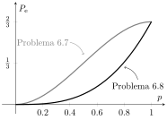

Tema 6. Probabilitat d'error de codis de canal pdf
Introducció
A la segona meitat del curs, estudiarem el problema de la transmissió de dades: com transmetre informació de manera fiable a través d'un canal de comunicació. Les primeres lliçons tracten sobre codis de canal, és a dir, esquemes que introdueixen redundància per combatre errors de canal. Les últimes lliçons tracten sobre els resultats fonamentals de la teoria de la informació: la major quantitat d'informació que podem transmetre i les propietats de les mesures d'informació (entropia i informació mútua) en els sistemes de processament de dades.
Comencem definint el problema. A diferència de la compressió de dades, on els codis font representaven una font sense errors, aquí tindrem errors deguts al canal. No podem eliminar completament els errors, però sí reduir-los amb codis. Considereu $k$ bits d'informació; podem assignar totes les seqüències possibles de bits d'informació a $2^k$ missatges indexats per nombres enters, que és el conjunt $\{1,\ldots,M\}$ on $M=2^k$. Per generalitzar aquesta configuració, permetem que $M$ sigui qualsevol nombre, no necessàriament una potència de dos, encara que en la majoria de les aplicacions pràctiques ho és. En general, diem que els $M$ missatges porten $$ k=\log_2(M) \tag{6.1}$$ bits d'informació, que pot ser un nombre decimal. Transmetem els missatges codificant-los en seqüències de $n$ bits. És a dir, un codi de canal ve donat pel conjunt de paraules codi $\{\boldsymbol{x}_1,\ldots,\boldsymbol{x}_M\}$ on cada paraula codi $\boldsymbol{x}_m$ és una seqüència de $n$ bits, per a $m\in\{1,\ldots,M\}$. Per exemple, els missatges $\{1,2,3\}$ es poden codificar en paraules codi $\{00,01,11\}$, totes seqüències de $n=2$ bits. Recordeu que el propòsit aquí és la transmissió de dades, no la compressió de dades sense pèrdues, per la qual cosa el concepte de codi sense prefixos no és rellevant. En canvi, un bon codi serà el que tingui alguna estructura per combatre els errors de canal, com els canvis de bits. La taxa o rate del codi, denotada per $R$, ve donada per $$ R = \frac kn, \tag{6.2}$$ la quantitat de bits d'informació per ús de canal. En l'exemple anterior, la taxa és de $R=\frac{\log_2(3)}{2}\approx 0.792481$ bits per ús de canal.
Problema 6.1. Considereu el codi de canal $\{000,111\}$. Quants bits d'informació estem transmetent amb aquest codi? Quina és la longitud del codi? Quina és la taxa del codi?
Mostra la solució
El codi té dues paraules codi, per tant, $M=2$ i $k=1$ bits d'informació. La longitud del codi és $n=3$, la quantitat de bits que té cada paraula codi. Finalment, la taxa és de $R=\frac 13$ bits per ús de canal.
El codi de canal s'utilitza sobre un canal discret sense memòria amb probabilitat de transició $P_{Y|X}(y|x)$. És a dir, després de la transmissió de la seqüència $\boldsymbol{x}$, la probabilitat de rebre la seqüència $\boldsymbol{y}$ és $$ P_{\boldsymbol{Y}|\boldsymbol{X}}(\boldsymbol{y}|\boldsymbol{x}) = \prod_{i=1}^n P_{Y|X}(y_i|x_i). \tag{6.3}$$
Problema 6.2. Considereu el canal discret sense memòria on $X\in\{0,1\}$ i $Y\in\{a,b\}$ amb probabilitats de transició $P_{Y|X}(a|0)=\frac 14$ i $P_{Y|X}(a|1)=\frac 14$. Quina és la probabilitat que en transmetre la seqüència $\boldsymbol{x}=010$ rebem $\boldsymbol{y}=aaa$?
Mostra la solució
Atès que el canal no té memòria, tenim que $ P_{\boldsymbol{Y}|\boldsymbol{X}}(aaa|010) = P_{Y|X}(a|0)^2 P_{Y|X}(a|1) = \frac{1}{64}$.
L'objectiu del descodificador en la transmissió de dades és endevinar (estimar) quin va ser el missatge transmès en funció de la sortida del canal (observació). En el curs veurem diversos descodificadors, tots ells poden representar-se com un mapatge entre sortides de canal $\boldsymbol{y}$ i missatges estimats $\hat m = \phi(\y)$.
Exemple 6.3. Un descodificador per al codi de canal $\{101,010\}$ funciona de la manera següent. Després de la recepció de la seqüència de sortida $\boldsymbol{y}$ (noteu que la longitud de la seqüència rebuda és la mateixa que la longitud de la seqüència transmesa), el descodificador mira el primer bit. Si el primer bit és $Y_1=0$, llavors $\hat m=2$, si el primer bit és $Y_1=1$, llavors $\hat m = 1$. Podem construir la taula de descodificació per a totes les possibles seqüències rebudes amb aquesta informació, és a dir $$\begin{gather} \boldsymbol{y} \mapsto \hat m \tag{6.4}\\ 000 \mapsto 2 \tag{6.5}\\ 001 \mapsto 2 \tag{6.6}\\ 010 \mapsto 2 \tag{6.7}\\ 011 \mapsto 2 \tag{6.8}\\ 100 \mapsto 1 \tag{6.9}\\ 101 \mapsto 1 \tag{6.10}\\ 110 \mapsto 1 \tag{6.11}\\ 111 \mapsto 1. \tag{6.12}\end{gather}$$
Més ben dit, un descodificador és una partició del conjunt de seqüències de sortida ${\cal Y}$. A la secció següent, serà convenient definir els subconjunts ${\cal D}_m$ i ${\cal E}_m$, respectivament, els conjunts de seqüències de sortida que es descodifiquen en missatge $m$ i el conjunt de seqüències de sortida que no es descodifiquen en missatge $m$ .
Exemple 6.4. El codi de canal $\{00,01,11\}$ es descodifica com $\hat m = 1+y_1+y_2$. Llavors, el conjunt de seqüències de sortida ${\cal Y}=\{00,01,10,11\}$ es pot particionar de la manera següent: ${\cal D}_1=\{00\}$ i ${\cal E}_1=\{01,10,11\}$, o ${\cal D}_2=\{01,10\}$ i ${\cal E}_2=\{00,11\}$, o ${\cal D}_3=\{11\}$ i ${\cal E}_3=\{00,01,10\}$.
Problema 6.5. Descriure la descodificació per al codi de l'Exemple 6.4 amb un descodificador donat per $\hat m = \argmin_{m\in\{1,\ldots,M\}} d(\x_m,\y)$, on $d(\x,\y)$ retorna el nombre de posicions de bit en què les seqüències $\x$ i $\y$ no coincideixen.
Mostra la solució
Per a $\y=00$ tenim que $d(\x_1,\y)=d(00,00)=0$, $d(\x_2,\y)=d(01,00)=1$ i $d(\x_3,\y)=d(11,00)=2$, per la qual cosa $$ \hat m(\y)=\hat m(00) = \argmin_{m\in\{1,2,3\}} d(\x_m,\y) = \argmin \bigl\{ d(\x_1,\y) , d(\x_2,\y),d(\x_3,\y) \bigr\} = \argmin\{0,1,2\}=1, \tag{6.13}$$ ja que el mínim en el conjunt $\{0,1,2\}$ s'assoleix per a $\x_1$, és a dir, quan $m=1$. Amb el mateix procediment obtenim $\hat m(01)=2$ i $\hat m(11)=3$. Per a $\y=10$, tanmateix, tenim un empat ja que tant $\x_1$ com $\x_3$ estan a distància mínima de $\y$. En aquest cas el descodificador pot donar un missatge d'error o donar $\hat m(10)\in\{1,3\}$ amb igual probabilitat. En el cas de donar un missatge d'error, la taula de descodificació quedaria com $$\begin{gather} \boldsymbol{y} \mapsto \hat m \tag{6.14}\\ 00 \mapsto 1 \tag{6.15}\\ 01 \mapsto 2 \tag{6.16}\\ 10 \mapsto e \tag{6.17}\\ 11 \mapsto 3, \tag{6.18}\end{gather}$$ i per tant ${\cal D}_1=\{00\}$, ${\cal E}_1=\{01,10,11\}$, ${\cal D}_2=\{01\}$, ${\cal E}_2=\{00,10,11\}$, ${\cal D}_3=\{11\}$ i ${\cal E}_3=\{00,01,10\}$.
Si transmetem el missatge $m$ i la sortida del canal $\boldsymbol{y}$ és tal que el descodificador emet un missatge estimat $\hat m\neq m$, estem cometent un error. El rendiment d'un codi de canal es mesura en termes de la probabilitat d'aquest esdeveniment, anomenada probabilitat d'error del codi.
Probabilitat d'error
La probabilitat d'error d'un codi de canal $\{ \x_1, \ldots, \x_M\}$, usat equiprobablement en un canal amb probabilitat de transició $P_{\Y|\X}(\y|\x)$ i descodificat amb un descodificador donat $\hat m = \phi(\y)$ ve donada per $$ P_{\rm e} = \frac 1M \sum_{m=1}^M P_{\rm e}(m), \tag{6.19}$$ on $P_{\rm e}(m)$ és la probabilitat d'error quan es transmet el missatge $m$, és a dir $ P_{\rm e}(m) = \mathbb{P}\left[ \phi(\boldsymbol{Y}) \neq m | \boldsymbol{X} = \boldsymbol{x}_m \right]. $ Com a probabilitat condicional respecte a la variable aleatòria $\boldsymbol{Y}=(Y_1,\ldots,Y_n)$, la probabilitat d'error del missatge $m$ es pot calcular com $$\begin{align} P_{\rm e}(m) = \sum_{\boldsymbol{y} \in {\cal E}_m} P_{\boldsymbol{Y}|\boldsymbol{X}}(\boldsymbol{y}|\boldsymbol{x}_m), \tag{6.20} \end{align}$$ on recordeu que ${\cal E}_m$ és el conjunt de seqüències de sortida de canal $\boldsymbol{y}$ tal que $\phi(\boldsymbol{y})\neq m$. De vegades serà convenient calcular $P_{\rm e}(m)$ usant la regió ${\cal D}_m$ en el seu lloc. Atès que la probabilitat de descodificació correcta i la probabilitat de descodificació errònia són probabilitats complementàries, tenim que $$ P_{\rm e}(m) = 1 - P_{\rm d}(m) = 1 - \sum_{\boldsymbol{y} \in {\cal D}_m} P_{\boldsymbol{Y}|\boldsymbol{X}}(\boldsymbol{y}|\boldsymbol{x}_m). \tag{6.21} $$
Exemple 6.6. Suposem que volem transmetre un sol bit d'informació equiprobable $k=1$ a través d'un canal simètric binari (BSC) amb entrada $X\in\{0,1\}$, sortida $Y\in\{0,1\}$ i probabilitat de transició $P_{Y|X}(1|0)=P_{Y|X}(0|1)=p$, on $0<p<1$. Per fer-ho, construïm un conjunt de $\smash{M=2^k=2}$ paraules codi $\{\x_1,\x_2\}$ per al conjunt de missatges $\{1,2\}$. Per exemple, podem assignar el bit d'informació 0 al missatge 1, el bit d'informació 1 al missatge 2 i intentar protegir aquesta informació repetint el bit d'informació $n=3$ vegades per obtenir el codi del canal $\{000,111\}$. Aquest codi té una taxa de $R=\frac{k}{n}=\frac 13$ bits per ús de canal. Després de la transmissió pel canal, tenim $2^n=8$ possibles seqüències de sortida ${\cal Y}=\{000,001,010,011,100,110,101,111\}$. Per descodificar la sortida del canal, hem de proposar una regla de descodificació $\hat m = \phi(\y)$ per a cada $\y\in{\cal Y}$. Per exemple, podem usar la descodificació majoritària: descodifiquem a favor del bit que es rep més vegades. Això condueix a la taula de descodificació següent: $$\begin{gather} \boldsymbol{y} \mapsto \hat m \tag{6.22}\\ 000 \mapsto 1 \tag{6.23}\\ 001 \mapsto 1 \tag{6.24}\\ 010 \mapsto 1 \tag{6.25}\\ 011 \mapsto 2 \tag{6.26}\\ 100 \mapsto 1 \tag{6.27}\\ 101 \mapsto 2 \tag{6.28}\\ 110 \mapsto 2 \tag{6.29}\\ 111 \mapsto 2. \tag{6.30}\end{gather}$$ De la taula de descodificació, obtenim les regions de descodificació i error ${\cal D}_1={\cal E}_2=\{000,001,010,100\}$ i ${\cal D}_2={\cal E}_1=\{011,101,110,111\}$. Noteu que les condicions ${\cal D}_1={\cal E}_2$ i ${\cal D}_2={\cal E}_1$ són conseqüència de tenir dos missatges i l'elecció de la regla de descodificació. En general, és possible que no tinguem aquesta propietat. A continuació calculem la probabilitat d'error del codi. Atès que cada bit d'informació és equiprobable, el codi de canal $\{000,111\}$ s'utilitzarà amb la mateixa probabilitat, per la qual cosa la probabilitat d'error del codi es pot escriure com $$ P_{\rm e} = \frac{P_{\rm e}(1) + P_{\rm e}(2)}{2}. \tag{6.31} $$ Penseu en $(6.31)$ quan el bit d'informació té, per exemple, probabilitats $\bigl\{\frac 23,\frac 13\bigr\}$; com canviaria l'expressió de $P_{\rm e}$? Seguim amb el nostre exemple. Per calcular $P_{\rm e}$ necessitem determinar $P_{\rm e}(1)$ i $P_{\rm e}(2)$. Comencem amb la probabilitat d'error del primer missatge. Podem usar $(6.20)$ o $(6.21)$, és a dir: $$\begin{align} P_{\rm e}(1) &= \sum_{\boldsymbol{y} \in {\cal E}_1} P_{\boldsymbol{Y}|\boldsymbol{X}}(\boldsymbol{y}|\boldsymbol{x}_1) \tag{6.32}\\ &= \sum_{\boldsymbol{y} \in \{011,101,110,111 \}} P_{\boldsymbol{Y}|\boldsymbol{X}}(\boldsymbol{y}|000) \tag{6.33}\\ &= P_{\boldsymbol{Y}|\boldsymbol{X}}(011|000) + P_{\boldsymbol{Y}|\boldsymbol{X}}(101|000) + P_{\boldsymbol{Y}|\boldsymbol{X}}(110|000) + P_{\boldsymbol{Y}|\boldsymbol{X}}(111|000). \tag{6.34}\end{align}$$ Atès que el canal no té memòria, $P_{\boldsymbol{Y}|\boldsymbol{X}}(011|000)=P_{Y|X}(0|0)P_{Y|X}(1|0)^2$ i així successivament. Usant les probabilitats de transició, obtenim $P_{\boldsymbol{Y}|\boldsymbol{X}}(011|000)= p^2(1-p)$, i de manera similar $P_{\boldsymbol{Y}|\boldsymbol{X}}(101|000)=p^2(1-p)$, $P_{\boldsymbol{Y}|\boldsymbol{X}}(110|000)=p^2(1-p)$ i $P_{\boldsymbol{Y}|\boldsymbol{X}}(111|000)=p^3$. Combinant aquests resultats, tenim $$ P_{\rm e}(1) = p^3 + 3p^2(1-p) = 3p^2 -2p^3. \tag{6.35} $$ També podem obtenir $(6.35)$ per $$\begin{align} P_{\rm e}(1) &= 1 - \sum_{\boldsymbol{y} \in {\cal D}_1} P_{\boldsymbol{Y}|\boldsymbol{X}}(\boldsymbol{y}|\boldsymbol{x}_1) \tag{6.36}\\ &= 1 - \sum_{\boldsymbol{y} \in \{000,001,010,100 \}} P_{\boldsymbol{Y}|\boldsymbol{X}}(\boldsymbol{y}|000) \tag{6.37}\\ &= 1 - \left( P_{\boldsymbol{Y}|\boldsymbol{X}}(000|000) + P_{\boldsymbol{Y}|\boldsymbol{X}}(001|000) + P_{\boldsymbol{Y}|\boldsymbol{X}}(010|000) + P_{\boldsymbol{Y}|\boldsymbol{X}}(100|000) \right) \tag{6.38}\\ &= 1 - \left( (1-p)^3 + 3p(1-p)^2 \right) \tag{6.39}\\ & = 1 - (2 p^3-3 p^2+1) \tag{6.40}\\ & = 3p^2 -2p^3. \tag{6.41}\end{align}$$ Seguint els mateixos passos, obtenim que $P_{\rm e}(2) = 3p^2-2p^3$ i per tant $P_{\rm e}=3p^2-2p^3$. L'avantatge de repetir el bit queda clara si comparem la probabilitat d'error del codi $P_{\rm e}$ amb la probabilitat d'un bit flip, que correspondria a transmetre el bit d'informació sense protecció. Grafiquem ambdues a la Figura 6.1.

Com es pot apreciar, per a $p\in\bigl(0,\frac 12\bigr)$, el codi de repetició $\{000,111\}$ supera (té una menor probabilitat d'error) el bit d'informació no repetit. Tanmateix, per a $p\in\bigl(\frac 12,1 \bigr)$ passa el contrari! Bé, si el receptor sap que $p>\frac 12$, quina és una regla de descodificació $\phi(\y)$ més plausible?
Problema 6.7. Calculeu la probabilitat d'error del codi de canal de l'exemple 6.6 quan s'usa amb distribució de probabilitat $\bigl\{ \frac 13, \frac 23 \bigr\}$ sobre el canal binari amb probabilitat de transició $P_{Y|X}(0|0)=1$ i $P_{Y|X}(0|1)=p$ amb la regla de descodificació majoritària.
Mostra la solució
Les regions de descodificació i error ${\cal D}_1$, ${\cal D}_2$, ${\cal E}_1$ i ${\cal E}_2$ són les mateixes que abans ja que ni el codi ni la regla de descodificació $\phi(\y)$ han canviat. El que ha canviat és la probabilitat de transició, per la qual cosa hem de recalcular les probabilitats d'error per al missatge 1 i el missatge 2. Comencem com abans amb el missatge 1, que és $$\begin{align} P_{\rm e}(1) &= \sum_{\boldsymbol{y} \in {\cal E}_1} P_{\boldsymbol{Y}|\boldsymbol{X}}(\boldsymbol{y}|\boldsymbol{x}_1) \tag{6.42}\\ &= \sum_{\boldsymbol{y} \in \{011,101,110,111 \}} P_{\boldsymbol{Y}|\boldsymbol{X}}(\boldsymbol{y}|000) \tag{6.43}\\ &= P_{\boldsymbol{Y}|\boldsymbol{X}}(011|000) + P_{\boldsymbol{Y}|\boldsymbol{X}}(101|000) + P_{\boldsymbol{Y}|\boldsymbol{X}}(110|000) + P_{\boldsymbol{Y}|\boldsymbol{X}}(111|000). \tag{6.44}\end{align}$$ Tanmateix, atès que el canal és diferent, tenim que $P_{\boldsymbol{Y}|\boldsymbol{X}}(011|000) = P_{\boldsymbol{Y}|\boldsymbol{X}}(101|000) = P_{\boldsymbol{Y}|\boldsymbol{X}}(110|000) = P_{\boldsymbol{Y}|\boldsymbol{X}}(111|000) = 0$ perquè $P_{Y|X}(1|0)=0$. Per tant, $P_{\rm e}(1)=0$, la qual cosa significa que amb aquest codi, aquest canal i aquest descodificador, mai ens equivoquem quan transmetem el primer missatge. Per al missatge $2$ preferim tenir $$\begin{align} P_{\rm e}(2) &= \sum_{\boldsymbol{y} \in {\cal E}_2} P_{\boldsymbol{Y}|\boldsymbol{X}}(\boldsymbol{y}|\boldsymbol{x}_2) \tag{6.45}\\ &= \sum_{\boldsymbol{y} \in \{000,001,010,100 \}} P_{\boldsymbol{Y}|\boldsymbol{X}}(\boldsymbol{y}|111) \tag{6.46}\\ &= P_{\boldsymbol{Y}|\boldsymbol{X}}(000|111) + P_{\boldsymbol{Y}|\boldsymbol{X}}(001|111) + P_{\boldsymbol{Y}|\boldsymbol{X}}(010|111) + P_{\boldsymbol{Y}|\boldsymbol{X}}(100|111) \tag{6.47}\\ &= p^3 + 3p^2(1-p). \tag{6.48}\end{align}$$ Per això $$ P_{\rm e} = \frac 13 P_{\rm e}(1) + \frac 23 P_{\rm e}(2) = 0 + \frac 23 \left(p^3 + 3p^2(1-p) \right) = \frac 23 p^3 + 2p^2(1-p). \tag{6.49}$$
Problema 6.8. Considereu el mateix codi i canal que el Problema 6.7 però amb la regla de descodificació següent: si $\y$ té almenys un bit $1$ llavors $\hat m=2$, altrament $\hat m=1$. Quina és la probabilitat d'error del codi de repetició ara?
Mostra la solució
Atès que la regla de descodificació ha canviat, la taula de descodificació s'ha d'actualitzar: $$\begin{gather} \boldsymbol{y} \mapsto \hat m \tag{6.50}\\ 000 \mapsto 1 \tag{6.51}\\ 001 \mapsto 2 \tag{6.52}\\ 010 \mapsto 2 \tag{6.53}\\ 011 \mapsto 2 \tag{6.54}\\ 100 \mapsto 2 \tag{6.55}\\ 101 \mapsto 2 \tag{6.56}\\ 110 \mapsto 2 \tag{6.57}\\ 111 \mapsto 2. \tag{6.58}\end{gather}$$ En aquest cas, $P_{\rm e}(1)=0$ com abans ja que $P_{\rm e}(1)=1 - P_{\rm d}(1) = 1 - P_{\Y|\X}(000|000)=1-1=0$, però $P_{\rm e}(2)=P_{\Y|\X}(000|111)=p^3$. Finalment, $$ P_{\rm e} = \frac 23 p^3. \tag{6.59} $$ Representem $P_{\rm e}$ del problema 6.7 en comparació amb $(6.59)$ a la Figura 6.2. Clarament, aquest nou descodificador ofereix un millor rendiment per a tots els rangs de $0<p<1$.
